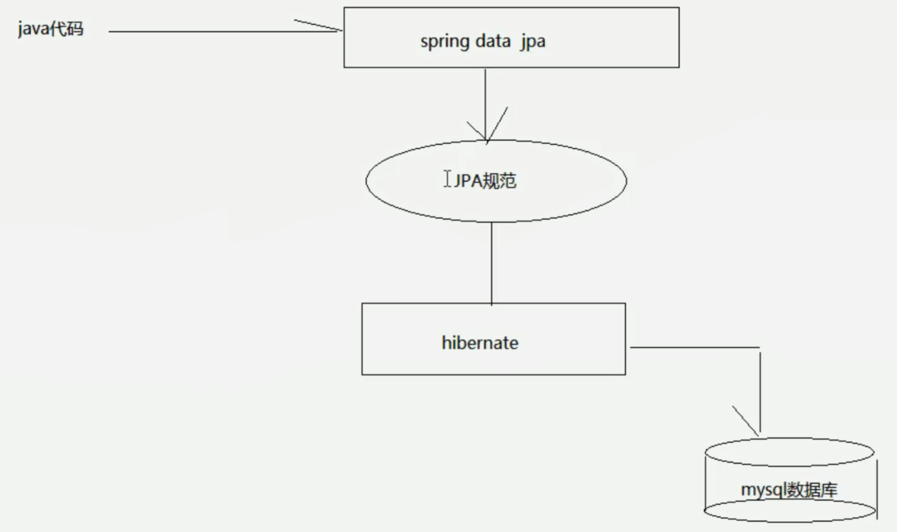
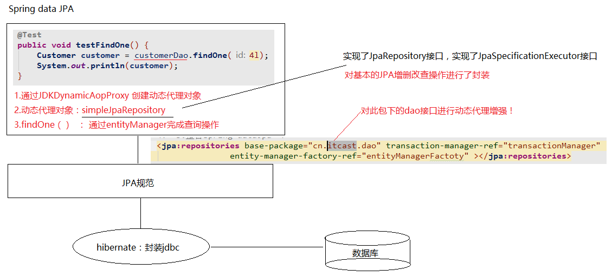

原文连接:https://www.cnblogs.com/xiaozhongfeixiang/p/11461258.html
SpringDataJpaSpring Data JPA
让我们解脱了DA0层的操作，基本上所有CRUD都可以依赖于它来实现，在实际的工作工程中，推荐使用Spring Data JPA+ORM（如：hibernate）完成操作，这样在切换不同的ORM框架时提供了极大的方便，同时也使数据库层操作更加简单，方便解耦。
把JPA规范的代码封装起来，真正进行查询的还是hibernate或mybatis >>（封装了jdbc操作）,然后进行查询或操作数据库。

SpringDataJpa入门操作（搭建环境）
创建工程，导入坐标

1 <?xml version="1.0" encoding="UTF-8"?>
2 <project xmlns="http://maven.apache.org/POM/4.0.0"
3 xmlns:xsi="http://www.w3.org/2001/XMLSchema-instance"
4 xsi:schemaLocation="http://maven.apache.org/POM/4.0.0 http://maven.apache.org/xsd/maven-4.0.0.xsd">
5 <modelVersion>4.0.0</modelVersion>
6
7 <groupId>cn.itcast</groupId>
8 <artifactId>jpa-day02</artifactId>
9 <version>1.0-SNAPSHOT</version>
10
11 <properties>
12 <spring.version>5.0.2.RELEASE</spring.version>
13 <hibernate.version>5.0.7.Final</hibernate.version>
14 <s1f4j.version>1.6.6</s1f4j.version>
15 <log4j.version>1.2.12</log4j.version>
16 <c3pe.version>0.9.1.2</c3pe.version>
17 <mysql.version>5.1.6</mysql.version>
18 </properties>
19
20 <dependencies>
21 <!--junit单元测试-->
22 <dependency>
23 <groupId>junit</groupId>
24 <artifactId>junit</artifactId>
25 <version>4.9</version>
26 <scope>test</scope>
27 </dependency>
28 <!--spring beg-->
29 <dependency>
30 <groupId>org.aspectj</groupId>
31 <artifactId>aspectjweaver</artifactId>
32 <version>1.6.8</version>
33 </dependency>
34 <dependency>
35 <groupId>org.springframework</groupId>
36 <artifactId>spring-aop</artifactId>
37 <version>${spring.version}</version>
38 </dependency>
39 <dependency>
40 <groupId>org.springframework</groupId>
41 <artifactId>spring-context</artifactId>
42 <version>${spring.version}</version>
43 </dependency>
44 <dependency>
45 <groupId>org.springframework</groupId>
46 <artifactId>spring-context-support</artifactId>
47 <version>${spring.version}</version>
48 </dependency>
49 <!--spring对ORm框架的支持包-->
50 <dependency>
51 <groupId>org.springframework</groupId>
52 <artifactId>spring-orm</artifactId>
53 <version>${spring.version}</version>
54 </dependency>
55 <dependency>
56 <groupId>org.springframework</groupId>
57 <artifactId>spring-beans</artifactId>
58 <version>${spring.version}</version>
59 </dependency>
60 <dependency>
61 <groupId>org.springframework</groupId>
62 <artifactId>spring-core</artifactId>
63 <version>${spring.version}</version>
64 </dependency>
65
66 <!--spring end-->
67
68 <!--hibernate beg-->
69 <dependency>
70 <groupId>org.hibernate</groupId>
71 <artifactId>hibernate-core</artifactId>
72 <version>${hibernate.version}</version>
73 </dependency>
74 <dependency>
75 <groupId>org.hibernate</groupId>
76 <artifactId>hibernate-entitymanager</artifactId>
77 <version>${hibernate.version}</version>
78 </dependency>
79 <dependency>
80 <groupId>org.hibernate</groupId>
81 <artifactId>hibernate-validator</artifactId>
82 <version>5.2.1.Final</version>
83 </dependency>
84
85 <!--hibernate end-->
86
87 <!--c3p0 beg-->
88 <dependency>
89 <groupId>c3p0</groupId>
90 <artifactId>c3p0</artifactId>
91 <version>0.9.1.2</version>
92 </dependency>
93
94 <!--log end-->
95 <dependency>
96 <groupId>log4j</groupId>
97 <artifactId>log4j</artifactId>
98 <version>1.2.17</version>
99 </dependency>
100 <dependency>
101 <groupId>org.slf4j</groupId>
102 <artifactId>slf4j-api</artifactId>
103 <version>1.7.25</version>
104 </dependency>
105 <dependency>
106 <groupId>org.slf4j</groupId>
107 <artifactId>slf4j-log4j12</artifactId>
108 <version>1.6.6</version>
109 </dependency>
110 <!--log end-->
111
112 <dependency>
113 <groupId>mysq1</groupId>
114 <artifactId>mysql-connector-java</artifactId>
115 <version>5.1.6</version>
116 </dependency>
117 <!-- spring data jpa 的坐标 -->
118 <dependency>
119 <groupId>org.springframework.data</groupId>
120 <artifactId>spring-data-jpa</artifactId>
121 <version>1.9.0.RELEASE</version>
122 </dependency>
123 <dependency>
124 <groupId>org.springframework</groupId>
125 <artifactId>spring-test</artifactId>
126 <version>4.2.4.RELEASE</version>
127 </dependency>
128
129 <!--el beg 使用spring data jpa必须引入-->
130 <dependency>
131 <groupId>javax.el</groupId>
132 <artifactId>javax.el-api</artifactId>
133 <version>2.2.4</version>
134 </dependency>
135 <dependency>
136 <groupId>org.glassfish.web</groupId>
137 <artifactId>javax.el</artifactId>
138 <version>2.2.4</version>
139 </dependency>
140 <dependency>
141 <groupId>org.projectlombok</groupId>
142 <artifactId>lombok</artifactId>
143 <version>1.16.22</version>
144 </dependency>
145 </dependencies>
146 </project>配置Spring的配置文件
1 <!--创建entityManagerFactory对象交给Spring容器管理-->
2 <bean id="entityManagerFactory" class="org.springframework.orm.jpa.LocalContainerEntityManagerFactoryBean"> （权限定位类名）
3 <property name="dataSource" ref="dataSource"/> （依赖注入）
4 <property name="packagesToScan " value="cn.itcast.domain"/> （配置的扫描的包，实体类所在的包）
5 <property name="persistenceProvider"> （JPA的实现厂家）
6 <bean class="org.hibernate.jpa.HibernatePersistenceProvider"/>
7 </property>
8
9 <!--jpa的供应商适配器-->
10 <property name="jpaVendorAdapter">
11 <bean class="org.springframework.orm.jpa.vendor.HibernateJpaVendorAdapter">
12 <!--配置是否自动创建数据库表-->
13 <property name="generateDdl" value="false"/>
14 <!--指定数据库类型-->
15 <property name="database" value="MYSQL"/>
16 <!--数据库方言：支持的特有语法（不同数据库有不同的语法）-->
17 <property name="databasePlatform" value="org.hibernate.dialect.MySQLDialect"/>
18 <!--是否显示sql-->
19 <property name="showSql" value="true"/>
20 </bean>
21 </property>
22
23 <!--jpa的方言 ：高级特性（配置了谁就拥有了谁的高级特性）-->
24 <property name="jpaDialect">
25 <bean class="org.springframework.orm.jpa.vendor.HibernateJpaDialect"></bean>
26 </property>
27 </bean>
28 <!--2.创建数据库连接池-->
29 <bean id="dataSource" class="com.mchange.v2.c3p0.ComboPooledDataSource">
30 <property name="user" value="root"></property>
31 <property name="password" value="123456"></property>
32 <property name="jdbcUrl" value="jdbc:mysq1:///jpa"></property>
33 <property name="driverClass" value="com.mysql.jdbc.Driver"></property>
34 </bean>
35 （以下的不需要特别记忆）>>>
36 <!--3.整合spring dataJpa-->
37 <jpa:repositories base-package="cn.itcast.dao" transaction-manager-ref="transactionManager"
38 entity-manager-factory-ref="entityManagerFactory"></jpa:repositories>
39 <!--4.配置事务管理器-->
40 <bean id="transactionManager" class="org.springframework.orm.jpa.JpaTransactionManager">
41 <property name="entityManagerFactory" ref="entityManagerFactory"></property>
42 </bean>
43 <!--5.声明式事务-->
44 <!--6.配置 包扫描-->
45 <context:component-scan base-package="cn.itcast"></context:component-scan>
46 </beans>编写符合SpringDataJpa规范的dao层接口
1 package cn.itcast.dao;
2
3 import cn.itcast.domain.Customer;
4
5 import org.springframework.data.jpa.repository.JpaRepository;
6 import org.springframework.data.jpa.repository.JpaSpecificationExecutor;
7 /**
8 * 符合springDataJpa的dao层接口规范
9 * JpaRepository<操作的实体类类型，实体类中主键属性的类型） >>>封装了基本的CRUD操作
10 * JpaSpecificationExecutor<操作的实体类类型> >>>封装了复杂查询（）
11 */
12 public interface CustomerDao extends JpaRepository<Customer, Long>, JpaSpecificationExecutor<Customer> {}
完成客户的增删改查操作
根据id查询
- findOne
em.find() 立即加载
- getOne
@Transactional：保证getOne正常运行
em.getReference() 延迟加载 >>返回的是一个客户的动态代理对象，什么时候用、什么时候查询
1 @Test
2 public void testFindOne() {
3 Customer customer = customerDao.findOne(3l);
4 System.out.println(customer);
5 }保存和更新（sava）
- 如果没有id主键属性：>> 保存
1 @Test
2 public void testSave() {
3 Customer customer = new Customer();
4 customer.setCustname("黑马程序员");
5 customer.setCustaddress("北京");
6 customer.setCustindustry("IT教育");
7 customerDao.save(customer);
8 }- 存在id主键属性: >> 根据id查询数据，更新数据
1 @Test
2 public void testUpdate() {
3 Customer customer = new Customer();
4 customer.setCustid(1l);
5 customer.setCustname("播客");
6 customer.setCustindustry("黑马程序员很厉害");
7 customerDao.save(customer);
8 }
根据id删除（delete）
1 @Test
2 public void testDelete() {
3 Customer customer = new Customer();
4 customerDao.delete(1l);
5 }
查询所有客户（findAll）
1 @Test
2 public void findAll(){
3 List<Customer> list = customerDao.findAll();
4 for (Customer customer : list) {
5 System.out.println(customer);
6 }
SpringDataJpa的运行过程和原理剖析
1. 通过JdkDynamicAopProxy的 invoke 方法创建了一个动态代理对象
2. simpleJpaRepository当中封装了 JPA的操作（借助JPA的api完成数据库的CRUD）
3. 通过 hibernate完成数据库操作（封装了jdbc）

复杂查询
-
借助接口中的定义好的方法完成查询
findone（id）：根据id查询
测试统计查询：查询客户的总数量
1 @Test
2 public void testdount() {
3 long count = customerDao.count();//查询全部的客户数量System.out.println（count）；
4 System.out.println(count);
5 }测试：判断id为3的客户是否存在
- 可以查询以下id为3的客户
如果值为空，代表不存在，如果不为空，代表存在
- 判断数据库中id为3的客户的数量
如果数量为0，代表不存在（false），如果大于0，代表存在（true）
1 @Test
2 public void testExists() {
3 boolean exists = customerDao.exists(3l);
4 System.out.println(exists);
5 }
-
jpql的查询方式♦♦
jpql：jpa query language（ jpq查询语言 ）
特点：语法或关键字和sql语句类似
查询的是类和类中的属性
需要将JPQL语句配置到接口方法上
1 .特有的查询：需要在dao接口上配置方法
2. 在新添加的方法上，使用注解的形式配置jpql查询语句
3. 注解：@Query
案例：根据客户名称查询名称 >> 使用Jpql的形式查询
CustomerDao
1 public interface CustomerDao extends JpaRepository<Customer, Long>, JpaSpecificationExecutor<Customer> {
2 /**
3 * 案例：根据客户名称查询名称
4 * 使用Jpql的形式查询
5 * jpql： from Customer where custName = ?
6 */
7 @Query(value = "from Customer where custname = ?")
8 public Customer findJpql(String custname);
9 }
JpqlTest
1 @Test
2 public void testFindJpql(){
3 Customer customer = customerDao.findJpql("传智");
4 System.out.println(customer);
5 }
案例：根据客户名称和客户id查询客户 >> 使用Jpql的形式查询
- 对于多个占位符参数： 赋值的时候，默认的情况下，占位符的位置需要和方法参数中的位置保持一致 [ custName >> String name custId >> Long id ]
@Query(value="from Customer where custName=? and custId=?")
public Customer findCustNameAndId (String name , Long id );
- 也可以指定占位符参数的位置 ： ？索引的方式，指定此占位的取值来源
@Query (value=" from Customer where custName = ?2 and custId = ?1 ")
public Customer findCustNameAndId ( Long id , String name );
CustomerDao
1 @Query(value = "from Customer where custname = ? and custid = ?")
2 public Customer findCustNameAndId(String custname, long id);JpqlTest
1 @Test
2 public void testCustNameAndId(){
3 Customer customer = customerDao.findCustNameAndId("黑马",2l);
4 System.out.println(customer);
5 }使用jpql完成更新操作案例：根据id更新更新2号客户的名称，将名称改为“黑马程序员”
CustomerDao
1 @Query(value = " update Customer set custname = ?2 where custid = ?1 ") //代表的是进行查询
2 @Modifying //当前执行的是一个更新操作
3 //更新不需要返回值 选择void
4 public void UpdateCustomer( long custid,String custname);JpqlTest
1 @Test
2 @Transactional //添加对事务的支持
3 @Rollback(value = false) //设置是否自动回滚
4 public void testUpdateCustomer(){
5 customerDao.UpdateCustomer(2l,"黑马程序员");
6 }执行结束后，默认回滚事务，可以通过@Rollback 设置是否自动回滚 >> false | true
-
SQL查询方式.
1 .特有的查询：需要在dao接口上配置方法
2. 在新添加的方法上，使用注解的形式配置sql查询语句
3. 注解：@Query
value： jsql | sql
nativeQuery : fals（使用jpql查询） l true（使用本地查询：sql查询）
CustomerDao
1 @Query(value = "select * from cst_customer",nativeQuery = true)
2 public List<Object[]>findSql();JpqlTest
1 @Test
2 public void testfindSql(){
3 List<Object[]> list = customerDao.findSql();
4 for (Object[] obj : list) {
5 System.out.println(Arrays.toString(obj));//每一个里面都还是object数组，所以需要借助Arrays.toString()方法打印数组
6 }-
方法命名规则查询
>> 1: findBy +属性名（首字母大写）
public Customer findByCustname(String custname);
1 @Test
2 public void testNaming(){
3 Customer customer = customerDao.findByCustname("传智");
4 System.out.println(customer);
5 }
>> 2: findBy + 属性名（首字母大写）+ “查询方式”
public List<Customer> findByCustnameLike(String custname);1 @Test
2 public void testfindByCustnameLike(){
3 List<Customer> list = customerDao.findByCustnameLike("黑马%");
4 for (Customer customer : list) {
5 System.out.println(customer);
6 } }
>> 3: findBy + 属性名（首字母大写）+ “查询方式” + “多条件的连接符（and | or）” + 属性名 + “查询方式”
使用客户名称模糊匹配和客户所属行业精准匹配的查询
public List<Customer> findByCustnameLikeAndCustindustry(String custname, String custindustry); //结果可能是一个或多个，所以选择List<Customer>
1 @Test
2 public void testFindByCustnameLikeAndCustindustry(){
3 List<Customer> list = customerDao.findByCustnameLikeAndCustindustry("黑马%","it教育");
4 for (Customer customer : list) {
5 System.out.println(customer);
6 } }
Specifications动态查询
- root ：查询的根对象（查询的任何属性都可以从根对象中获取）
- cirteriaQuery：顶层查询对象，自定义查询方式（了解，一般不用）
- cirteriaBuilder：查询的构造器，封装了很多查询条件
public Predicate toPredicate(Root<Customer> root , CriteriaQuery<?> query , CriteriaBuilder cb) { } //封装查询条件
查询客户名为 “传智” 的客户
1 @Test
2 public void testSpec() {
实现Specification接口（ 提供泛型 ：查询的对象属性）
3 Specification<Customer> spec = new Specification<Customer>() {
实现toPredicate方法（构造查询条件）
4 public Predicate toPredicate(Root<Customer> root, CriteriaQuery<?> query, CriteriaBuilder cb) {
5 //1.获取比较的属性
6 Path<Object> custname = root.get("custname");
7 //2.构造查询条件
8 Predicate predicate = cb.equal(custname, "传智"); //进行精准的匹配（custname：比较的属性 ， “传智”：比较的属性取值）
9 return predicate;
10 }};
11 Customer customer = customerDao.findOne(spec);
12 System.out.println(customer);
13 }查询客户名为 “黑马2” 并且行业为 "it教育" 的的客户
1 @Test
2 public void testSpec1() {
3 Specification<Customer> spec = new Specification<Customer>() {
4 public Predicate toPredicate(Root<Customer> root, CriteriaQuery<?> query, CriteriaBuilder cb) {
5 //1.获取比较的属性
6 Path<Object> custname = root.get("custname");
7 Path<Object> custindustry = root.get("custindustry");
8 //2.构造查询条件
9 Predicate p1 = cb.equal(custname, "黑马2");
10 Predicate p2 = cb.equal(custindustry, "it教育");
and（与关系）:满足条件1并且满足条件2 or（或关系）：满足条件1或满足条件2
11 Predicate and = cb.and(p1, p2);
12 return and;
13 }
14 };
15 Customer customer = customerDao.findOne(spec);
16 System.out.println(customer);
17 }
案例：完成根据客户名称的模糊匹配，返回客户列表 >>客户名称以 “传智播客” 开头
默认： equal：直接得到 path对象（属性），然后进行比较即可
gt（大于），lt（小于），ge（大于等于），le（小于等于），like：得到path对象，根据path指定比较的参数类型，再去进行比较
指定参数类型：path.as（类型的字节码对象）
1 @Test
2 public void testSpec2() {
3 Specification<Customer> spec = new Specification<Customer>() {
4 public Predicate toPredicate(Root<Customer> root, CriteriaQuery<?> query, CriteriaBuilder cb) {
5 Path<Object> custname = root.get("custname"); //查询属性：客户名
6 Predicate predicate = cb.like(custname.as(String.class), "传智播客%"); //查询方式：模糊匹配
7 return predicate;
8 }
9 };
10 List<Customer> list = customerDao.findAll(spec);
11 for (Customer customer : list) {
12 System.out.println(customer);
13 } }添加排序 >>创建排序对象，需要调用构造方法实例化sort对象
第一个参数：排序的顺序（倒序，正序）
- Sort.Direction.DESC：倒序
- Sort.Direction.ASC：升序
第二个参数：排序的属性名称
1 Sort sort = new Sort(Sort.Direction.DESC, "custid");
2 List<Customer> list = customerDao.findAll(spec, sort);
分页查询
- 不带参数的分页查询
创建PageRequest的过程中，需要调用他的构造方法传入两个参数
第一个参数：当前查询的页数（从e开始）
第二个参数：每页查询的数量
1 @Test
2 public void testSpec3() {
3 Specification spec = null; //不带参数
4 Pageable pageable = new PageRequest(0, 2);
5 //分页查询
6 Page<Customer> page = customerDao.findAll(null, pageable);
7 System.out.println(page.getContent());//得到数据集合列表
8 System.out.println(page.getTotalElements());//得到总条数
9 System.out.println(page.getTotalPages());//得到总页数
10 }
- 带参数分页查询
1 @Test
2 public void testSpec4() {
3 Specification spec = new Specification() {
4 public Predicate toPredicate(Root root, CriteriaQuery criteriaQuery, CriteriaBuilder criteriaBuilder) {
5 Path custname = root.get("custname");
6 Predicate predicate = criteriaBuilder.equal(custname, "传智播客");
7 return predicate;
8 }};
9 Pageable pageable = new PageRequest(0, 2);
10 //分页查询
11 Page<Customer> page = customerDao.findAll(spec, pageable);
12 System.out.println(page.getContent());//得到数据集合列表
13 System.out.println(page.getTotalElements());//得到总条数
14 System.out.println(page.getTotalPages());//得到总页数
15 }